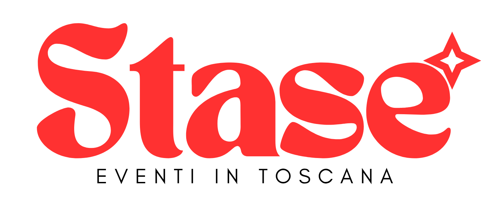

🏛️ VisitTuscany
📅
📍

Carico gli eventi in Toscana...
Compila il modulo qui sotto: il tuo evento comparirà sulla mappa e nella lista entro pochi minuti dall'invio.
Restano su questo dispositivo, senza bisogno di un account.
Scegli una provincia per vedere solo i suoi eventi, restando nella home. Con “Tutta la Toscana” torni a tutto.